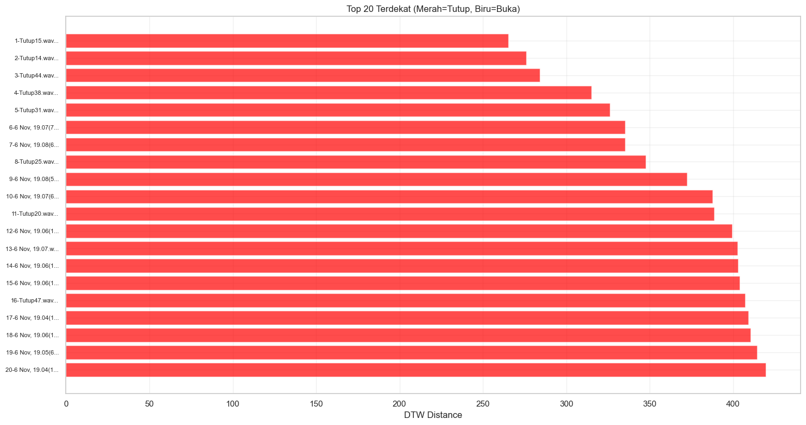
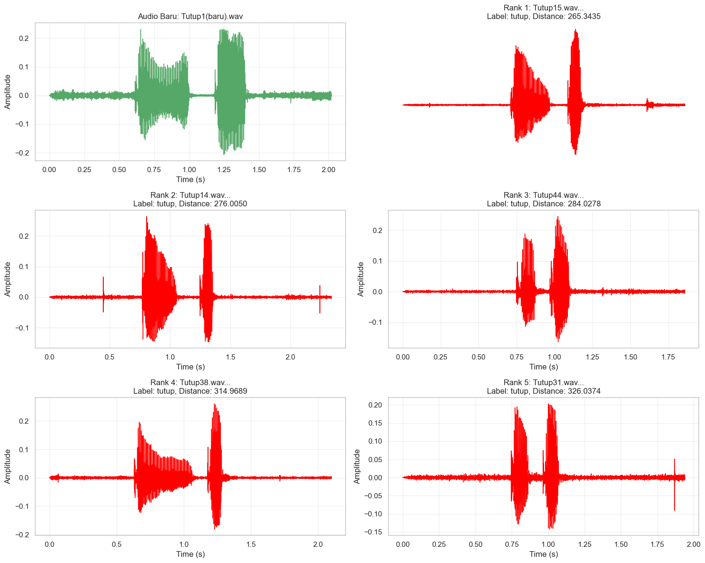
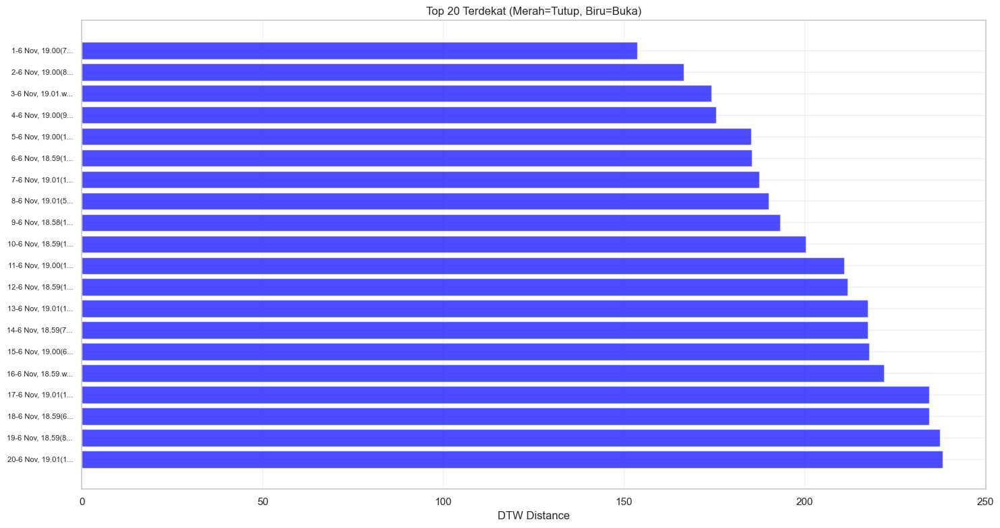
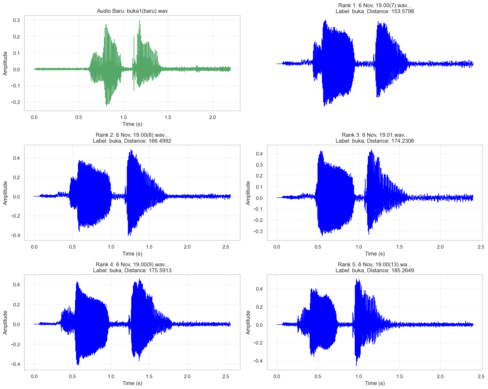

Menghitung jarak antara data lama(buka tutup) masing masing 100 data dengan data baru 1 data menggunakan Dynamic Time Warping#
1.1 Suara Tutup#
import os
import os
import librosa
import librosa.display
import numpy as np
import pandas as pd
import matplotlib.pyplot as plt
import seaborn as sns
import IPython.display as ipd
sns.set(style="whitegrid")
plt.rcParams['figure.figsize'] = (10, 4)
DATASET_PATH = "dataset48k"
train_path = os.path.join(DATASET_PATH, "train")
Visualisasi Suara Waveforms#
def plot_all_tutup_timeseries(base_path, max_files=None):
tutup_path = os.path.join(base_path, "tutup")
tutup_files = os.listdir(tutup_path)
if max_files:
tutup_files = tutup_files[:max_files]
n_files = len(tutup_files)
cols = 2
rows = (n_files + cols - 1) // cols
fig, axes = plt.subplots(rows, cols, figsize=(15, 3*rows))
if rows == 1:
axes = axes.reshape(1, -1)
for i, filename in enumerate(tutup_files):
file_path = os.path.join(tutup_path, filename)
# Load audio
y, sr = librosa.load(file_path, sr=None)
# Hitung time axis
time = np.linspace(0, len(y)/sr, len(y))
# Plot
row = i // cols
col = i % cols
axes[row, col].plot(time, y)
axes[row, col].set_title(f'Tutup - {filename}', fontsize=10)
axes[row, col].set_xlabel('Waktu (detik)')
axes[row, col].set_ylabel('Amplitude')
axes[row, col].grid(True, alpha=0.3)
for i in range(len(tutup_files), rows * cols):
row = i // cols
col = i % cols
fig.delaxes(axes[row, col])
plt.tight_layout()
plt.show()
print(f"Menampilkan {len(tutup_files)} file audio 'tutup'")
plot_all_tutup_timeseries(train_path, max_files=10)

Menampilkan 10 file audio 'tutup'
Perhitungan Dynamic Time Warping#
import numpy as np
from dtaidistance import dtw
import pandas as pd
from sklearn.preprocessing import StandardScaler
import matplotlib.pyplot as plt
import seaborn as sns
# def extract_features_for_dtw(audio_path, feature_type='mfcc'):
# y, sr = librosa.load(audio_path, sr=22050)
# mel_spec = librosa.feature.melspectrogram(y=y, sr=sr, n_mels=128)
# mel_spec_db = librosa.power_to_db(mel_spec, ref=np.max)
# chroma = librosa.feature.chroma_stft(y=y, sr=sr)
# mel_6_mean = np.mean(mel_spec_db[6, :])
# mel_6_std = np.std(mel_spec_db[6, :])
# mel_7_mean = np.mean(mel_spec_db[7, :])
# mel_7_std = np.std(mel_spec_db[7, :])
# chroma_0_mean = np.mean(chroma[0, :])
# from scipy.stats import skew
# stat_skew = skew(y)
# model_features = np.array([
# mel_7_std,
# chroma_0_mean,
# mel_6_std,
# stat_skew,
# mel_7_mean
# ])
# return model_features
def extract_features_for_dtw(audio_path, n_mfcc=13):
y, sr = librosa.load(audio_path, sr=22050)
mfcc = librosa.feature.mfcc(y=y, sr=sr, n_mfcc=n_mfcc)
seq = mfcc[0, :]
return seq
def calculate_dtw_distances(new_audio_path, train_path, max_files=100):
try:
# new_features = extract_features_for_dtw(new_audio_path, 'mfcc')
new_features = extract_features_for_dtw(new_audio_path)
except Exception as e:
print(f"Errorrrrrrr")
return None
tutup_train_files = []
train_labels = []
tutup_path = os.path.join(train_path, "tutup")
if os.path.exists(tutup_path):
for file in os.listdir(tutup_path):
if file.endswith(('.wav')):
tutup_train_files.append(os.path.join(tutup_path, file))
train_labels.append('tutup')
if len(tutup_train_files) > max_files:
indices = np.random.choice(len(tutup_train_files), max_files, replace=False)
tutup_train_files = [tutup_train_files[i] for i in indices]
train_labels = [train_labels[i] for i in indices]
results = []
for i, (train_file, label) in enumerate(zip(tutup_train_files, train_labels)):
try:
# Ekstrak fitur dari file training
# train_features = extract_features_for_dtw(train_file, 'mfcc')
train_features = extract_features_for_dtw(train_file)
# Hitung jarak DTW
dtw_distance = dtw.distance(new_features, train_features)
results.append({
'rank': i + 1,
'filename': os.path.basename(train_file),
'label': label,
'dtw_distance': dtw_distance,
'file_path': train_file
})
except Exception as e:
print(f" Error processing {train_file}: {e}")
continue
df_results = pd.DataFrame(results)
df_results = df_results.sort_values('dtw_distance').reset_index(drop=True)
df_results['rank'] = range(1, len(df_results) + 1)
return df_results
# Path audio baru
new_audio_path = "dataset48k/Tutup1(baru).wav"
# Hitung jarak DTW
dtw_results = calculate_dtw_distances(new_audio_path, train_path, max_files=100)
if dtw_results is not None:
print(f"\n=== RANKING JARAK DTW (Top 20) ===")
print(dtw_results.head(20).to_string(index=False))
print(f"\n=== STATISTIK HASIL ===")
print(f"Total file dianalisis: {len(dtw_results)}")
print(f"Jarak minimum: {dtw_results['dtw_distance'].min():.4f}")
print(f"Jarak maksimum: {dtw_results['dtw_distance'].max():.4f}")
print(f"Jarak rata-rata: {dtw_results['dtw_distance'].mean():.4f}")
---------------------------------------------------------------------------
ModuleNotFoundError Traceback (most recent call last)
Cell In[4], line 2
1 import numpy as np
----> 2 from dtaidistance import dtw
3 import pandas as pd
4 from sklearn.preprocessing import StandardScaler
ModuleNotFoundError: No module named 'dtaidistance'
Perangkingan dan Perbandingan#
def visualize_dtw_results(dtw_results, new_audio_path):
fig, ax = plt.subplots(1, 1, figsize=(15, 8))
# Top 20 ranking
top_20 = dtw_results.head(20)
colors = ['red' if label == 'tutup' else 'blue' for label in top_20['label']]
ax.barh(range(len(top_20)), top_20['dtw_distance'], color=colors, alpha=0.7)
ax.set_yticks(range(len(top_20)))
ax.set_yticklabels([f"{row['rank']}-{row['filename'][:15]}..."
for _, row in top_20.iterrows()], fontsize=8)
ax.set_xlabel('DTW Distance')
ax.set_title('Top 20 Terdekat (Merah=Tutup, Biru=Buka)')
ax.invert_yaxis()
ax.grid(True, alpha=0.3)
plt.tight_layout()
plt.show()
print("\n=== PERBANDINGAN WAVEFORM ===")
plot_waveform_comparison(new_audio_path, dtw_results.head(5))
def plot_waveform_comparison(new_audio_path, top_matches):
fig, axes = plt.subplots(3, 2, figsize=(15, 12))
# Audio baru
y_new, sr_new = librosa.load(new_audio_path, sr=22050)
time_new = np.linspace(0, len(y_new)/sr_new, len(y_new))
axes[0, 0].plot(time_new, y_new, 'g-', linewidth=1)
axes[0, 0].set_title(f'Audio Baru: {os.path.basename(new_audio_path)}')
axes[0, 0].set_xlabel('Time (s)')
axes[0, 0].set_ylabel('Amplitude')
axes[0, 0].grid(True, alpha=0.3)
for i, (_, row) in enumerate(top_matches.iterrows()):
if i >= 5:
break
try:
y_match, sr_match = librosa.load(row['file_path'], sr=22050)
time_match = np.linspace(0, len(y_match)/sr_match, len(y_match))
row_idx = (i + 1) // 2
col_idx = (i + 1) % 2
if row_idx < 3:
color = 'red' if row['label'] == 'tutup' else 'blue'
axes[row_idx, col_idx].plot(time_match, y_match, color=color, linewidth=1)
axes[row_idx, col_idx].set_title(f'Rank {row["rank"]}: {row["filename"][:20]}...\nLabel: {row["label"]}, Distance: {row["dtw_distance"]:.4f}')
axes[row_idx, col_idx].set_xlabel('Time (s)')
axes[row_idx, col_idx].set_ylabel('Amplitude')
axes[row_idx, col_idx].grid(True, alpha=0.3)
except Exception as e:
print(f"Error loading {row['filename']}: {e}")
continue
axes[0, 1].axis('off')
plt.tight_layout()
plt.show()
if dtw_results is not None:
visualize_dtw_results(dtw_results, new_audio_path)
print(f"\n=== SEMUA RANKING DTW (1-{len(dtw_results)}) ===")
print(dtw_results[['rank', 'filename', 'label', 'dtw_distance']].to_string(index=False))

=== PERBANDINGAN WAVEFORM ===

=== SEMUA RANKING DTW (1-100) ===
rank filename label dtw_distance
1 Tutup15.wav tutup 265.343527
2 Tutup14.wav tutup 276.004951
3 Tutup44.wav tutup 284.027816
4 Tutup38.wav tutup 314.968880
5 Tutup31.wav tutup 326.037383
6 6 Nov, 19.07(7).wav tutup 335.279567
7 6 Nov, 19.08(6).wav tutup 335.362672
8 Tutup25.wav tutup 347.615159
9 6 Nov, 19.08(5).wav tutup 372.375543
10 6 Nov, 19.07(6).wav tutup 387.833421
11 Tutup20.wav tutup 388.599898
12 6 Nov, 19.06(13).wav tutup 399.398134
13 6 Nov, 19.07.wav tutup 402.829169
14 6 Nov, 19.06(16).wav tutup 403.096635
15 6 Nov, 19.06(15).wav tutup 403.938040
16 Tutup47.wav tutup 407.412048
17 6 Nov, 19.04(11).wav tutup 409.259880
18 6 Nov, 19.06(14).wav tutup 410.668593
19 6 Nov, 19.05(6).wav tutup 414.590149
20 6 Nov, 19.04(12).wav tutup 419.505667
21 Tutup37.wav tutup 426.895868
22 Tutup2.wav tutup 428.061588
23 6 Nov, 19.07(12).wav tutup 429.976160
24 6 Nov, 19.08(4).wav tutup 432.883545
25 6 Nov, 19.08.wav tutup 435.082691
26 Tutup9.wav tutup 437.059621
27 6 Nov, 19.06(2).wav tutup 437.525945
28 Tutup23.wav tutup 437.542927
29 6 Nov, 19.07(8).wav tutup 438.827515
30 6 Nov, 19.06(12).wav tutup 440.696794
31 6 Nov, 19.05(5).wav tutup 443.644229
32 6 Nov, 19.05(2).wav tutup 444.787110
33 6 Nov, 19.07(11).wav tutup 448.665023
34 6 Nov, 19.05(4).wav tutup 448.889225
35 6 Nov, 19.07(5).wav tutup 448.893973
36 Tutup49.wav tutup 453.308671
37 6 Nov, 19.04(10).wav tutup 454.070652
38 6 Nov, 19.08(3).wav tutup 457.777273
39 6 Nov, 19.05(3).wav tutup 459.440488
40 6 Nov, 19.05(13).wav tutup 460.751798
41 6 Nov, 19.07(3).wav tutup 460.947950
42 Tutup4.wav tutup 463.524410
43 Tutup21.wav tutup 464.545630
44 6 Nov, 19.06(9).wav tutup 465.148516
45 Tutup8.wav tutup 467.335748
46 6 Nov, 19.07(4).wav tutup 469.944838
47 6 Nov, 19.06.wav tutup 471.341321
48 6 Nov, 19.04(9).wav tutup 471.743927
49 Tutup5.wav tutup 472.026449
50 6 Nov, 19.07(2).wav tutup 481.709560
51 Tutup46.wav tutup 482.405970
52 Tutup11.wav tutup 486.879035
53 Tutup12.wav tutup 492.904962
54 Tutup7.wav tutup 493.975875
55 Tutup3.wav tutup 497.262479
56 6 Nov, 19.04(13).wav tutup 501.696695
57 Tutup6.wav tutup 501.984751
58 Tutup40.wav tutup 502.610598
59 Tutup24.wav tutup 503.600450
60 6 Nov, 19.05(10).wav tutup 509.948039
61 6 Nov, 19.08(2).wav tutup 511.078447
62 6 Nov, 19.06(8).wav tutup 515.740713
63 Tutup45.wav tutup 518.535573
64 Tutup41.wav tutup 521.154017
65 Tutup13.wav tutup 521.860943
66 Tutup19.wav tutup 526.827460
67 6 Nov, 19.07(9).wav tutup 531.609274
68 6 Nov, 19.06(11).wav tutup 532.433545
69 Tutup18.wav tutup 536.431556
70 6 Nov, 19.05(12).wav tutup 538.557347
71 Tutup35.wav tutup 541.422752
72 Tutup10.wav tutup 542.917988
73 Tutup30.wav tutup 545.622483
74 Tutup16.wav tutup 546.418191
75 6 Nov, 19.06(3).wav tutup 550.983471
76 6 Nov, 19.06(6).wav tutup 551.111053
77 Tutup27.wav tutup 554.281875
78 6 Nov, 19.05(7).wav tutup 556.730977
79 6 Nov, 19.05.wav tutup 571.023644
80 6 Nov, 19.05(9).wav tutup 579.720237
81 Tutup32.wav tutup 580.761663
82 Tutup42.wav tutup 583.277474
83 Tutup50.wav tutup 586.919086
84 Tutup29.wav tutup 587.353260
85 6 Nov, 19.06(10).wav tutup 587.781502
86 Tutup43.wav tutup 589.448822
87 6 Nov, 19.05(11).wav tutup 594.325172
88 Tutup36.wav tutup 595.312261
89 Tutup22.wav tutup 610.066931
90 6 Nov, 19.07(10).wav tutup 623.190888
91 Tutup17.wav tutup 632.886767
92 Tutup33.wav tutup 638.324147
93 Tutup1.wav tutup 641.935011
94 Tutup39.wav tutup 655.371820
95 6 Nov, 19.05(8).wav tutup 655.767403
96 Tutup28.wav tutup 669.750262
97 Tutup48.wav tutup 681.641187
98 6 Nov, 19.06(5).wav tutup 700.004713
99 6 Nov, 19.06(7).wav tutup 743.528142
100 6 Nov, 19.06(4).wav tutup 768.622666
1.2 Suara Buka#
import os
import os
import librosa
import librosa.display
import numpy as np
import pandas as pd
import matplotlib.pyplot as plt
import seaborn as sns
import IPython.display as ipd
sns.set(style="whitegrid")
plt.rcParams['figure.figsize'] = (10, 4)
DATASET_PATH = "dataset48k"
train_path = os.path.join(DATASET_PATH, "train")
Visualisasi Suara Waveforms#
def plot_all_tutup_timeseries(base_path, max_files=None):
tutup_path = os.path.join(base_path, "buka")
tutup_files = os.listdir(tutup_path)
if max_files:
tutup_files = tutup_files[:max_files]
n_files = len(tutup_files)
cols = 2
rows = (n_files + cols - 1) // cols
fig, axes = plt.subplots(rows, cols, figsize=(15, 3*rows))
if rows == 1:
axes = axes.reshape(1, -1)
for i, filename in enumerate(tutup_files):
file_path = os.path.join(tutup_path, filename)
# Load audio
y, sr = librosa.load(file_path, sr=None)
# Hitung time axis
time = np.linspace(0, len(y)/sr, len(y))
# Plot
row = i // cols
col = i % cols
axes[row, col].plot(time, y)
axes[row, col].set_title(f'Buka - {filename}', fontsize=10)
axes[row, col].set_xlabel('Waktu (detik)')
axes[row, col].set_ylabel('Amplitude')
axes[row, col].grid(True, alpha=0.3)
for i in range(len(tutup_files), rows * cols):
row = i // cols
col = i % cols
fig.delaxes(axes[row, col])
plt.tight_layout()
plt.show()
print(f"Menampilkan {len(tutup_files)} file audio 'buka'")
plot_all_tutup_timeseries(train_path, max_files=10)

Menampilkan 10 file audio 'buka'
Perhitungan Dynamic Time Warping#
import numpy as np
from dtaidistance import dtw
import pandas as pd
from sklearn.preprocessing import StandardScaler
import matplotlib.pyplot as plt
import seaborn as sns
# def extract_features_for_dtw(audio_path, feature_type='mfcc'):
# y, sr = librosa.load(audio_path, sr=22050)
# mel_spec = librosa.feature.melspectrogram(y=y, sr=sr, n_mels=128)
# mel_spec_db = librosa.power_to_db(mel_spec, ref=np.max)
# chroma = librosa.feature.chroma_stft(y=y, sr=sr)
# mel_6_mean = np.mean(mel_spec_db[6, :])
# mel_6_std = np.std(mel_spec_db[6, :])
# mel_7_mean = np.mean(mel_spec_db[7, :])
# mel_7_std = np.std(mel_spec_db[7, :])
# chroma_0_mean = np.mean(chroma[0, :])
# from scipy.stats import skew
# stat_skew = skew(y)
# model_features = np.array([
# mel_7_std,
# chroma_0_mean,
# mel_6_std,
# stat_skew,
# mel_7_mean
# ])
# return model_features
def extract_features_for_dtw(audio_path, n_mfcc=13):
y, sr = librosa.load(audio_path, sr=22050)
mfcc = librosa.feature.mfcc(y=y, sr=sr, n_mfcc=n_mfcc)
seq = mfcc[0, :]
return seq
def calculate_dtw_distances(new_audio_path, train_path, max_files=100):
try:
# new_features = extract_features_for_dtw(new_audio_path, 'mfcc')
new_features = extract_features_for_dtw(new_audio_path)
except Exception as e:
print(f"Errorrrrrrr")
return None
tutup_train_files = []
train_labels = []
tutup_path = os.path.join(train_path, "buka")
if os.path.exists(tutup_path):
for file in os.listdir(tutup_path):
if file.endswith(('.wav')):
tutup_train_files.append(os.path.join(tutup_path, file))
train_labels.append('buka')
if len(tutup_train_files) > max_files:
indices = np.random.choice(len(tutup_train_files), max_files, replace=False)
tutup_train_files = [tutup_train_files[i] for i in indices]
train_labels = [train_labels[i] for i in indices]
results = []
for i, (train_file, label) in enumerate(zip(tutup_train_files, train_labels)):
try:
# Ekstrak fitur dari file training
# train_features = extract_features_for_dtw(train_file, 'mfcc')
train_features = extract_features_for_dtw(train_file)
# Hitung jarak DTW
dtw_distance = dtw.distance(new_features, train_features)
results.append({
'rank': i + 1,
'filename': os.path.basename(train_file),
'label': label,
'dtw_distance': dtw_distance,
'file_path': train_file
})
except Exception as e:
print(f" Error processing {train_file}: {e}")
continue
df_results = pd.DataFrame(results)
df_results = df_results.sort_values('dtw_distance').reset_index(drop=True)
df_results['rank'] = range(1, len(df_results) + 1)
return df_results
# Path audio baru
new_audio_path = "dataset48k/buka1(baru).wav"
# Hitung jarak DTW
dtw_results = calculate_dtw_distances(new_audio_path, train_path, max_files=100)
if dtw_results is not None:
print(f"\n=== RANKING JARAK DTW (Top 20) ===")
print(dtw_results.head(20).to_string(index=False))
print(f"\n=== STATISTIK HASIL ===")
print(f"Total file dianalisis: {len(dtw_results)}")
print(f"Jarak minimum: {dtw_results['dtw_distance'].min():.4f}")
print(f"Jarak maksimum: {dtw_results['dtw_distance'].max():.4f}")
print(f"Jarak rata-rata: {dtw_results['dtw_distance'].mean():.4f}")
=== RANKING JARAK DTW (Top 20) ===
rank filename label dtw_distance file_path
1 6 Nov, 19.00(7).wav buka 153.579828 dataset48k\train\buka\6 Nov, 19.00(7).wav
2 6 Nov, 19.00(8).wav buka 166.499162 dataset48k\train\buka\6 Nov, 19.00(8).wav
3 6 Nov, 19.01.wav buka 174.230570 dataset48k\train\buka\6 Nov, 19.01.wav
4 6 Nov, 19.00(9).wav buka 175.591258 dataset48k\train\buka\6 Nov, 19.00(9).wav
5 6 Nov, 19.00(13).wav buka 185.264872 dataset48k\train\buka\6 Nov, 19.00(13).wav
6 6 Nov, 18.59(13).wav buka 185.414561 dataset48k\train\buka\6 Nov, 18.59(13).wav
7 6 Nov, 19.01(17).wav buka 187.480838 dataset48k\train\buka\6 Nov, 19.01(17).wav
8 6 Nov, 19.01(5).wav buka 190.082019 dataset48k\train\buka\6 Nov, 19.01(5).wav
9 6 Nov, 18.58(17).wav buka 193.261965 dataset48k\train\buka\6 Nov, 18.58(17).wav
10 6 Nov, 18.59(14).wav buka 200.319067 dataset48k\train\buka\6 Nov, 18.59(14).wav
11 6 Nov, 19.00(10).wav buka 211.001956 dataset48k\train\buka\6 Nov, 19.00(10).wav
12 6 Nov, 18.59(11).wav buka 211.888206 dataset48k\train\buka\6 Nov, 18.59(11).wav
13 6 Nov, 19.01(10).wav buka 217.457910 dataset48k\train\buka\6 Nov, 19.01(10).wav
14 6 Nov, 18.59(7).wav buka 217.542363 dataset48k\train\buka\6 Nov, 18.59(7).wav
15 6 Nov, 19.00(6).wav buka 217.889946 dataset48k\train\buka\6 Nov, 19.00(6).wav
16 6 Nov, 18.59.wav buka 221.884282 dataset48k\train\buka\6 Nov, 18.59.wav
17 6 Nov, 19.01(11).wav buka 234.538868 dataset48k\train\buka\6 Nov, 19.01(11).wav
18 6 Nov, 18.59(6).wav buka 234.551967 dataset48k\train\buka\6 Nov, 18.59(6).wav
19 6 Nov, 18.59(8).wav buka 237.356303 dataset48k\train\buka\6 Nov, 18.59(8).wav
20 6 Nov, 19.01(12).wav buka 238.153207 dataset48k\train\buka\6 Nov, 19.01(12).wav
=== STATISTIK HASIL ===
Total file dianalisis: 100
Jarak minimum: 153.5798
Jarak maksimum: 1139.0735
Jarak rata-rata: 551.4480
Perangkingan dan Perbandingan#
def visualize_dtw_results(dtw_results, new_audio_path):
fig, ax = plt.subplots(1, 1, figsize=(15, 8))
# Top 20 ranking
top_20 = dtw_results.head(20)
colors = ['red' if label == 'tutup' else 'blue' for label in top_20['label']]
ax.barh(range(len(top_20)), top_20['dtw_distance'], color=colors, alpha=0.7)
ax.set_yticks(range(len(top_20)))
ax.set_yticklabels([f"{row['rank']}-{row['filename'][:15]}..."
for _, row in top_20.iterrows()], fontsize=8)
ax.set_xlabel('DTW Distance')
ax.set_title('Top 20 Terdekat (Merah=Tutup, Biru=Buka)')
ax.invert_yaxis()
ax.grid(True, alpha=0.3)
plt.tight_layout()
plt.show()
# Waveform comparison
print("\n=== PERBANDINGAN WAVEFORM ===")
plot_waveform_comparison(new_audio_path, dtw_results.head(5))
def plot_waveform_comparison(new_audio_path, top_matches):
fig, axes = plt.subplots(3, 2, figsize=(15, 12))
# Audio baru
y_new, sr_new = librosa.load(new_audio_path, sr=22050)
time_new = np.linspace(0, len(y_new)/sr_new, len(y_new))
axes[0, 0].plot(time_new, y_new, 'g-', linewidth=1)
axes[0, 0].set_title(f'Audio Baru: {os.path.basename(new_audio_path)}')
axes[0, 0].set_xlabel('Time (s)')
axes[0, 0].set_ylabel('Amplitude')
axes[0, 0].grid(True, alpha=0.3)
for i, (_, row) in enumerate(top_matches.iterrows()):
if i >= 5:
break
try:
y_match, sr_match = librosa.load(row['file_path'], sr=22050)
time_match = np.linspace(0, len(y_match)/sr_match, len(y_match))
row_idx = (i + 1) // 2
col_idx = (i + 1) % 2
if row_idx < 3:
color = 'red' if row['label'] == 'tutup' else 'blue'
axes[row_idx, col_idx].plot(time_match, y_match, color=color, linewidth=1)
axes[row_idx, col_idx].set_title(f'Rank {row["rank"]}: {row["filename"][:20]}...\nLabel: {row["label"]}, Distance: {row["dtw_distance"]:.4f}')
axes[row_idx, col_idx].set_xlabel('Time (s)')
axes[row_idx, col_idx].set_ylabel('Amplitude')
axes[row_idx, col_idx].grid(True, alpha=0.3)
except Exception as e:
print(f"Error loading {row['filename']}: {e}")
continue
axes[0, 1].axis('off')
plt.tight_layout()
plt.show()
if dtw_results is not None:
visualize_dtw_results(dtw_results, new_audio_path)
print(f"\n=== SEMUA RANKING DTW (1-{len(dtw_results)}) ===")
print(dtw_results[['rank', 'filename', 'label', 'dtw_distance']].to_string(index=False))

=== PERBANDINGAN WAVEFORM ===

=== SEMUA RANKING DTW (1-100) ===
rank filename label dtw_distance
1 6 Nov, 19.00(7).wav buka 153.579828
2 6 Nov, 19.00(8).wav buka 166.499162
3 6 Nov, 19.01.wav buka 174.230570
4 6 Nov, 19.00(9).wav buka 175.591258
5 6 Nov, 19.00(13).wav buka 185.264872
6 6 Nov, 18.59(13).wav buka 185.414561
7 6 Nov, 19.01(17).wav buka 187.480838
8 6 Nov, 19.01(5).wav buka 190.082019
9 6 Nov, 18.58(17).wav buka 193.261965
10 6 Nov, 18.59(14).wav buka 200.319067
11 6 Nov, 19.00(10).wav buka 211.001956
12 6 Nov, 18.59(11).wav buka 211.888206
13 6 Nov, 19.01(10).wav buka 217.457910
14 6 Nov, 18.59(7).wav buka 217.542363
15 6 Nov, 19.00(6).wav buka 217.889946
16 6 Nov, 18.59.wav buka 221.884282
17 6 Nov, 19.01(11).wav buka 234.538868
18 6 Nov, 18.59(6).wav buka 234.551967
19 6 Nov, 18.59(8).wav buka 237.356303
20 6 Nov, 19.01(12).wav buka 238.153207
21 6 Nov, 18.59(12).wav buka 239.957945
22 6 Nov, 19.02(4).wav buka 247.929803
23 6 Nov, 18.59(2).wav buka 254.227210
24 6 Nov, 18.59(9).wav buka 254.490932
25 6 Nov, 19.02(2).wav buka 257.746775
26 6 Nov, 18.59(3).wav buka 260.709396
27 6 Nov, 19.01(15).wav buka 261.153133
28 6 Nov, 19.01(13).wav buka 263.022770
29 6 Nov, 19.01(14).wav buka 267.784752
30 6 Nov, 19.00(4).wav buka 267.937001
31 6 Nov, 19.02.wav buka 268.145263
32 6 Nov, 19.01(9).wav buka 268.950242
33 6 Nov, 19.01(16).wav buka 270.105808
34 6 Nov, 18.59(10).wav buka 273.981888
35 6 Nov, 19.02(3).wav buka 274.604941
36 6 Nov, 18.59(5).wav buka 278.931699
37 6 Nov, 19.00(3).wav buka 279.271431
38 6 Nov, 19.01(3).wav buka 279.574617
39 6 Nov, 19.02(5).wav buka 281.161584
40 6 Nov, 19.00(5).wav buka 284.487299
41 6 Nov, 19.00(2).wav buka 284.746947
42 6 Nov, 19.01(4).wav buka 290.336776
43 6 Nov, 19.00(12).wav buka 299.560875
44 6 Nov, 18.59(4).wav buka 303.606779
45 6 Nov, 19.01(2).wav buka 304.907635
46 6 Nov, 19.01(8).wav buka 309.253917
47 6 Nov, 19.00(11).wav buka 313.442478
48 6 Nov, 18.58(16).wav buka 321.760211
49 6 Nov, 19.00.wav buka 321.957764
50 6 Nov, 19.01(7).wav buka 342.580986
51 6 Nov, 19.01(6).wav buka 347.540294
52 Buka3.wav buka 497.542758
53 Buka6.wav buka 500.401391
54 Buka26.wav buka 570.311157
55 Buka1.wav buka 577.849324
56 Buka23.wav buka 583.390478
57 Buka22.wav buka 594.986456
58 Buka4.wav buka 606.627774
59 Buka29.wav buka 659.487525
60 Buka7.wav buka 680.737133
61 Buka19.wav buka 710.838566
62 Buka15.wav buka 728.029855
63 Buka28.wav buka 740.048426
64 Buka2.wav buka 747.525270
65 Buka8.wav buka 768.343132
66 Buka37.wav buka 797.454067
67 Buka17.wav buka 797.898665
68 Buka31.wav buka 831.056159
69 Buka18.wav buka 832.408853
70 Buka20.wav buka 865.141466
71 Buka13.wav buka 872.381924
72 Buka49.wav buka 873.790625
73 Buka36.wav buka 881.284730
74 Buka35.wav buka 883.921655
75 Buka12.wav buka 890.904474
76 Buka5.wav buka 896.435561
77 Buka42.wav buka 908.275197
78 Buka39.wav buka 910.689249
79 Buka21.wav buka 916.935429
80 Buka10.wav buka 929.934336
81 Buka41.wav buka 930.217676
82 Buka32.wav buka 939.819670
83 Buka24.wav buka 941.225202
84 Buka14.wav buka 951.359381
85 Buka11.wav buka 956.198275
86 Buka33.wav buka 958.774330
87 Buka30.wav buka 972.748251
88 Buka16.wav buka 972.949240
89 Buka43.wav buka 980.804322
90 Buka27.wav buka 983.778836
91 Buka44.wav buka 1006.279169
92 Buka50.wav buka 1008.985886
93 Buka34.wav buka 1048.429435
94 Buka9.wav buka 1049.547326
95 Buka40.wav buka 1065.739290
96 Buka47.wav buka 1071.541260
97 Buka25.wav buka 1080.587959
98 Buka48.wav buka 1090.401736
99 Buka45.wav buka 1113.848787
100 Buka46.wav buka 1139.073496